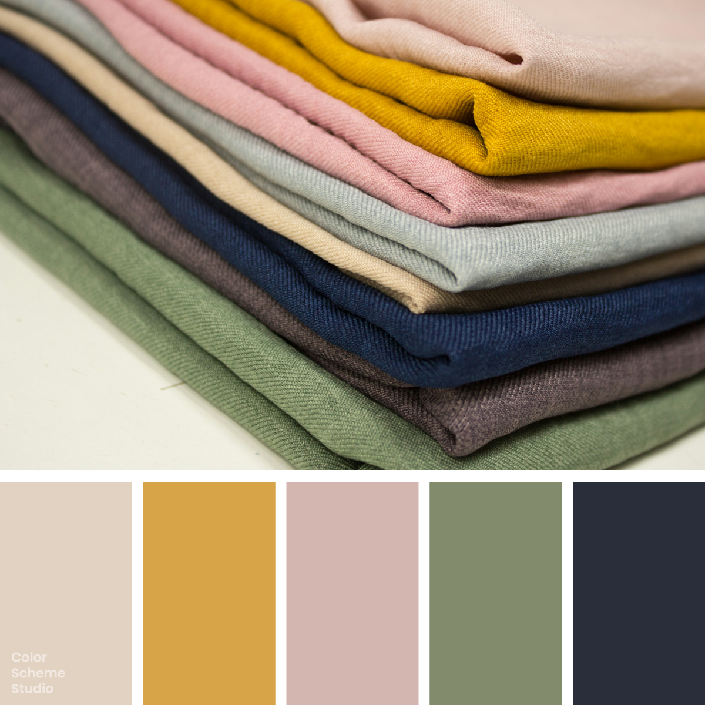

Vintage / Pink
Vintage soft color palette
Warm Linen, Soft Gold, Muted Blush, Quiet Sage, Ink Navy. Explore five colours and copy their HEX values.

The palette
Click a hex to copyRGB & CMYK values
| Color | Hex | RGB | CMYK (approx.) |
|---|---|---|---|
| Warm Linen | #E2D2C2 | 226 210 194 | 0 7 14 11 |
| Soft Gold | #D7A448 | 215 164 72 | 0 24 67 16 |
| Muted Blush | #D3B6B0 | 211 182 176 | 0 14 17 17 |
| Quiet Sage | #828B6C | 130 139 108 | 6 0 22 45 |
| Ink Navy | #2A2E3A | 42 46 58 | 28 21 0 77 |
Soft warm tones with an ink navy anchor
Warm Linen and Muted Blush sit close in lightness. The blush has a redder cast, so it can mark a separate surface without making the palette feel sharply divided. Soft Gold is more saturated and carries a small accent clearly. Quiet Sage adds an olive note between the pale colors and the deep Ink Navy. In the examples, linen provides the field, navy anchors the headline, and gold appears in small shapes. The muted pink circle keeps the warm field soft, while the sage action uses dark lettering.
The palette, in use.
One way these five colours can look together.
A fresh
point of view.
Colour, stories and things
worth keeping.
A little
inspiration.
good idea.A collection worth coming back to.
Illustrative previews. White and dark ink are added for readable text.
Photo by Ekaterina Grosheva on Unsplash. Color studies and application notes by Color Scheme Studio.